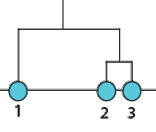

TP 12a. Data Mining - Clustering
Software a usar
- R (ya instalado en la VM).
- RStudio (ya instalado en la VM)
Danger
ver si algo mas
Recursos Online
- Introducción a R, TP 8 de esta materia: Parte 1 y Parte 2
- hclust https://www.datanovia.com/en/lessons/agglomerative-hierarchical-clustering/
Danger
ver si algo mas, rehacer imagen inicial (algo mas grande, mejor definicion)
Objetivos
- Familiarizarse con técnicas para analizar grandes conjuntos de datos y encontrar patrones o comportamientos similares entre ellos.
- Familiarizarse con el funcionamiento del clustering jerárquico aglomerativo.
- Familiarizarse con el método de clustering particional K-means.
- Explorar algunas medidas de calidad de los clusters, como la silueta o silhouette.
- Aplicar los conocimientos adquiridos para analizar e interpretar un conjunto de datos reales de expresión génica con microarrays.
Introducción al Tema
En este TP vamos a retomar el trabajo con R. Recomendamos repasar o tener a mano el TP 8 de esta materia por si necesitan recordar como hacer ciertos comandos (Parte 1 y Parte 2).
(Agregar algo de Data Mining)
Durante el TP vamos a utilizar técnicas básicas para encontrar conglomerados o clusters en un conjunto de datos biológicos. La idea es identificar agrupamientos naturales en los datos, que presenten un comportamiento similar entre sí, con alguna relevancia biológica.
En particular utilizaremos conjuntos de datos provenientes de medidas de expresión génica generadas mediante experimentos con microarrays con muestras tomadas a diferentes tiempos con el objetivo de identificar grupos o clusters de genes que tengan un perfil de expresión común.
to do
re redactar este ultimo parrafo
Ejercicio 1 - Clustering Jerárquico Manual
Para empezar este TP vamos a realizar un pequeño clustering jerárquico a mano para repasar el concepto.
Supongamos que tenemos cuatro genes (A, B, C y D) para los cuales medimos el nivel de expresión a las 0hs, 1hs y 2hs luego de algún tratamiento:
| gen | t_0h | t_1h | t_2h |
|---|---|---|---|
| genA | 2 | 4 | 8 |
| genB | -1 | -1 | -2 |
| genC | -2 | 0 | 1 |
| genD | 0 | -1 | -6 |
Queremos entonces agrupar a los diferentes genes por como varían sus niveles de expresión cuando se aplica dicho tratamiento. Para hacer esto vamos a:
- Calcular la distancia euclidiana entre los diferentes genes
- Construir una matriz de distancias
- Agruparlos usando clustering jerárquico donde el criterio de agregación va a ser "vecino más lejano" o complete linkage
- Repetir todo lo anterior, pero estandarizando previamente los datos de niveles de expresión
Si no entienden algunos de estos conceptos pueden leer un poco más sobre ellos a continuación (y más todavía en la teórica):
Distancia euclideana
Es una de las varias formas de calcular una distancia entre dos vectores de datos, lo cual es necesario al momento de calcular una matriz de distancias. Por ejemplo, suponiendo que tenemos 2 vectores de forma \(V = (x, y, z)\) la distancia euclideana entre ellos se calcula como:
Aplicando esto a nuestros datos, la distancia entre los genes A y B se calcula como:
Matriz de distancias
Es una matriz donde tanto las filas como las columnas representan un mismo conjunto de elementos y en cada intersección se pone la distancia (en nuestro caso euclideana) entre dos elementos específicos. Es la base de muchos métodos de clustering.
Para nuestros datos la matriz de distancias entre los cuatro genes es:
| genA | genB | genC | genD | |
|---|---|---|---|---|
| genA | 0 | |||
| genB | 11,58 | 0 | ||
| genC | 9 | 3,32 | 0 | |
| genD | 15 | 4,12 | 7,35 | 0 |
Como el órden de los elementos es igual para las filas que para las columnas, en la diagonal se compara cada elemento contra sí mismo por lo que la distancia es 0. Por otro lado, estamos llenando solo la mitad de la matriz ya que las matrices de distancia son matrices simétricas, es decir, que el triángulo superior derecho de la matriz va a ser un reflejo del triángulo inferior izquierdo.
Clustering jerárquico
Clustering jerárquico es una forma de agrupar elementos dependiendo de que tan similares son entre ellos. Usa un algoritmo bastante sencillo de entender que se basa en una matriz de distancias:
-
Sin considerar a la diagonal, encontrar el par de elementos (fila, columna) que son más similares entre sí (el menor número en la matriz de distancias). En nuestra matriz de distancias los elementos más parecidos son "genB" y "genC" ya que tienen la menor similitud (3,32)
-
Dejar constancia de dicha similitud y reconstruir la matriz, reemplazando ambos elementos por uno nuevo ( saco los elementos "genB" y "genC" y agrego el elemento "genB+C")
-
Al momento de calcular la nueva distancia entre este nuevo elemento ("genB+C") y el resto de los elementos de la matriz, usar algún criterio de agregación (por ej: single linkage, average linkage o complete linkage)
-
Volver al paso 1 hasta que todos los elementos estén unidos entre sí
Una vez hecho esto puedo dibujar el clustering jerárquico teniendo en cuenta qué elementos se juntaron con qué elementos.
Criterios de agregación
Los criterios de agregación indican que operación hay que hacer al momento de calcular la distancia entre un nuevo elemento creado en una matriz de distancias y los ya existentes. Cada uno tiene sus ventajas y desventajas.
Siguiendo con nuestro ejemplo, si queremos calcular la distancia entre el nuevo elemento "genB+C" y el "genA":
- Single Linkage: la nueva distancia es la menor entre las distancias \(dist(genA, genB)\) y \(dist(genA, genC)\)
- Complete Linkage: la nueva distancia es la mayor entre las distancias \(dist(genA, genB)\) y \(dist(genA, genC)\)
- Average Linkage: la nueva distancia es el promedio de las distancias \(dist(genA, genB)\) y \(dist(genA, genC)\)
-
Para agilizar un poco este Ejercicio les vamos a dar una planilla de Google Sheets que contiene la base de lo que vamos a necesitar. Abran esta planilla de Google Sheets y hagan una copia. Leyendo la siguiente información, traten de entender que hace las diferentes partes de dicha planilla (desde ya, hay partes vacías que vamos a completar).
-
Pestaña Plot Señal
- Columnas A - D: contienen nuestros datos
- Columnas F y G: contienen el promedio y la desviación estandar de cada gen (vacío, ahora lo hacemos)
- Columnas I - L: contienen nuestros datos estandarizados (vacío, ahora lo hacemos)
- Plot izquierdo: plot de la evolución de los niveles de expresión a los 3 tiempos para los 4 genes
- Plot derecho: plot de la evolución de los niveles de expresión estandarizados a los 3 tiempos para los 4 genes (se hace solo al llenar datos)
-
Pestaña Clustering
- Columnas A - D: contienen nuestros datos
- Columnas F - J: contienen el cálculo de las distancias euclideanas entre las filas
- Columnas L - P: contienen la matriz de distancias para nuestros datos (y matrices más chicas donde se van a ir escribiendo los varios pasos al hacer el clustering a mano)
-
Pestaña Clustering Estandarizado
- Igual que Clustering, pero para datos estandarizados (vacío, ahora lo hacemos)
-
-
Mirando el Plot izquierdo de la pestaña Plot Señal, ¿de qué forma les parece que se van a agrupar los cuatro genes en el clustering jerárquico?
-
Ahora vamos a calcular el clustering jerárquico:
-
Vayan a la pestaña Clustering. Usando la matriz de distancias ubicada en las Columnas L - P, calculen a mano el clustering jerárquico para nuestros datos usando complete linkage.
-
Hagan un esquema del dendrograma o árbol de similitud que resulta de este clustering. Pueden usar la herramienta Dibujo de Google Sheets (no se preocupen por el largo de las ramas, solo nos importa como se unen los genes).
-
¿Dió similar a lo que habían propuesto en el punto 2?
-
-
Queremos ahora calcular nuestros datos estandarizados donde vamos a estandarizar por gen, restandole a cada dato el promedio de los tres tiempos para ese gen y dividiendo el resultado por la desviación estándar de los tres tiempos para ese gen. Es decir:
\[ datoEstandarizado(genA, t_0) = \frac{dato(genA, t_0) - promedio(genA)}{desviacionEstandar(genA)} \]Para hacer esto:
-
En la pestaña Plot Señal, completen las columnas F y G para que calculen el promedio y la desviación estándar para los tres tiempos de cada uno de los cuatro genes.
-
En la pestaña Plot Señal, completen las columnas J a L para que calculen los valores estandarizados de los datos en base a la fórmula anterior.
Tip - Copiar y pegar una fórmula en Google Sheets manteniendo una parte constante
En Google Sheets, así como en Excell y otras hojas de cálculo, es posible "arrastrar" una fórmula, por lo que podrían calcular el dato estandarizado para un solo número (por ej celda J2) y luego copiar dicha fórmula al resto de las celdas.
Sin embargo, de usar este método para calcular los valores estandarizados tendríamos problemas, ya que se movería también la referencia en la fórmula a las celdas del promedio y la desviación estándar (las cuales queremos que se muevan con la fórmula para abajo, pero no para la derecha).
Por suerte es posible controlar esto agregandole el símbolo $ adelante de la fila o columna. Es decir, si la fórmula apunta a F2 y no queremos que se mueva horizontalmente (es decir, no queremos que cambie la F), podemos agregar el símbolo $ en la fórmula con lo que quedaría $F2. Si ahora arrastramos (o copiamos y pegamos) dicha fórmula, el 2 puede cambiar, pero la F se va a mantener siempre como F.
-
Una vez calculados los datos estandarizados debería aparecerles el plot en el Plot derecho. ¿De qué forma les parece que se van a agrupar los cuatro genes en el clustering jerárquico usando los datos estandarizados?
-
-
El próximo paso es calcular la matriz de distancias para nuestros datos estandarizados:
-
Copien los datos recien calculados a la pestaña Clustering Estandarizado (ojo que queremos los valores, no las fórmulas).
-
En la columna J, calculen las distancias euclideanas entre los diferentes genes.
-
Copien a mano las distancias recién calculadas a las posiciones correspondientes de la matriz de distancias en las Columnas L - P.
-
-
Por último vamos a calcular el clustering jerárquico para nuestros datos estandarizados:
-
Asegurensé que estan en la pestaña Clustering Estandarizado. Usando la matriz de distancias ubicada en las
Columnas L - P, calculen a mano el clustering jerárquico para nuestros datos estandarizados usando complete linkage. -
Hagan un esquema del dendrograma o árbol de similitud que resulta de este clustering. Pueden usar la herramienta Dibujo de Google Sheets (no se preocupen por el largo de las ramas, solo nos importa como se unen los genes).
-
¿Dió similar a lo que habían propuesto en el punto 4.c?
-
-
Comparando los clusterings obtenidos con los datos estandarizados y sin estandarizar.
- ¿Qué similitudes y diferencias observan?
- ¿Cuál de los dos clusterings les parece mejor para este escenario donde queríamos evaluar como afectaba un tratamiento los niveles de expresión de diferentes genes?
- ¿Les parece qué es siempre correcto estandarizar los datos de esta forma o se les ocurre escenarios donde no es así?
Ejercicio 2 - Clustering Jerárquico con R
En este Ejercicio vamos a hacer lo mismo que hicimos en el Ejercicio 1, pero ahora lo vamos a hacer en R.
Los datos originales los tienene en el archivo tabla_ejemplo.tsv que se encuentra en sus materiales de trabajo.
TO DO
seguir de aca, poner codigo, probablemente guiarlos en el normal y estandarizado, que ellos hagan la version estandarizada (que es super copy paste, pero bue), comparacion
ver si hacer cor, silouhette y heatmap en algun lado (o sea, hacerlo, pero ver si conviene hacerlo en este EJ u otro)
lo demas es para 12b
Herramientas necesarias
Ejercicio
Clustering directo
usar fread para leer tabla, que valor hay que pasarle a sep?
dist, matriz de distancias, explicar antes tipo en 8b?
que es una matriz? (tipo variable en R)
clustering jerarquico, hclust
plot, guardar como PDF (basarse en 8b), cambiar titulo?
Clustering normalizado
estandarizar, usa scale, pero para eso hay que transponer, la otra es apply que hay un ejemplo, pero puede ser complejo, ver que pasa con datatable y transpose
repetir todo lo anterior con transpuesta
heatmap
teoria, hacer heatmaps, comparar con
groups
correlacion y pearson
Ej 3 - Kmeans
Ej 4 - Silhouette
Ej 5 - Ej 3
cruzipaina creo que era Enzima Z ahora, tengo que ver los archivos para entenderlo bien
lee datos, usa una funcion rara, abrirla y explicarla, tal vez que hagan un poco o todo
los plots no ponerlos aca, dar mejores instrucciones para que los hagan ellos
ver imagenes gene onthology, ver si alargar y hacer propio ej?
Ej 6? 7? 8? hay como 3 ejs mas medio sueltos, ir viendo, hay uno de heatmaps interactivos, ver si es plotly y sino ver si vale la pena
Experimento
Objetivo
Bibliografía
Consola de R
- Comando
help()